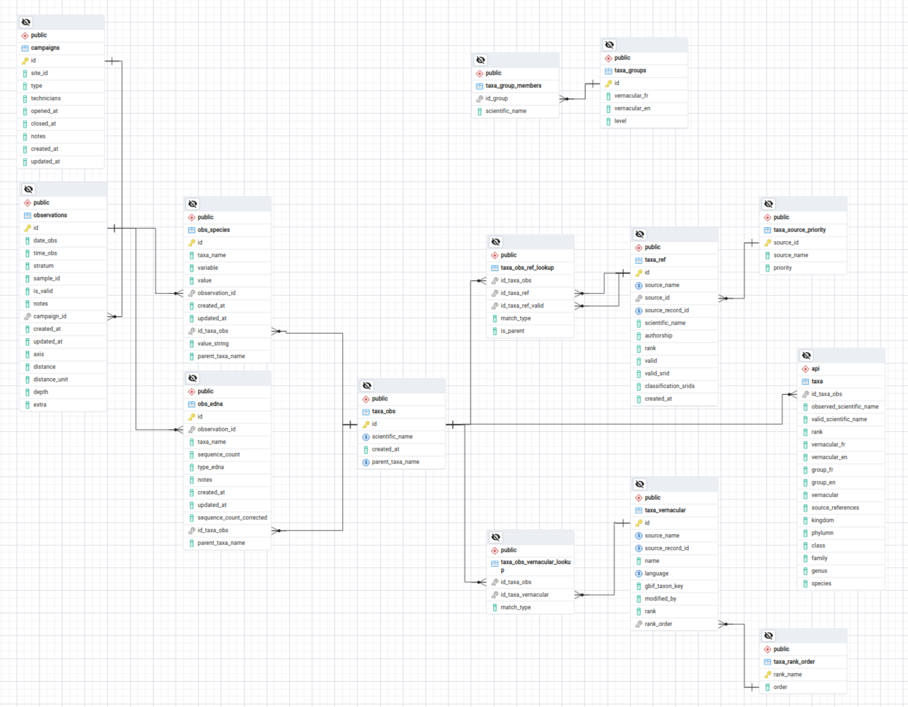

Taxonomie

Features
Raw observed taxonomic entry stored as-is. Minimal maintenance of stored taxon database and taxon entries overhead operation (validation, correction) is allowed by storing raw taxon values as-is. All corrected and validated referenced taxonomic entries are found through fuzzy matching and stored independently.
Taxon accepted for all ranks : Observation may be be related to an organism identified at many different levels ie.
species,genus,familydepending on the type of survey. All taxonomic entries may be ingested into the observed taxon table regardless of their rank and will be related to their referenced taxons.Fuzzy matching : Raw taxon are matched to entries in reference taxonomic databases using fuzzy matching, thus correcting for orthographic or casing error.
Unresolved entry : If a raw taxonomic entry cannot be matched, closest taxonomic parent reference will be obtained and related if possible.
Multiple and conflicting taxonomic sources : Raw taxons are matched to their referenced counterparts from multiple taxonomic databases. These matches allows for use of specialized databases or conflicting ones. They are stored without priority, making it possible to reference a raw taxon and related observation through any names obtained through conflicting reference database.
Parent-children taxonomic relationship : Search taxons and related observations through parent taxons possible through stored reference taxons for parents and relationship to raw entry. ie. Parent taxon class
Avescan be related to all children species taxon entriesCyanocitta cristata,Falco peregrinus, etc.Revised taxon and valid synonym : Raw taxon whose valid reference named has changed are matched to both deprecated references and valid ones, making it possible to search raw taxons and related observation and event through either one.
Updating and change in reference taxonomic database : Updates to the validity of a taxonomic entry is possible through periodic update of references obtained from raw taxon entries. Raw taxons are thus stored and maintained as described in original sources and surveys
Vernacular names : A list of vernacular names (fr & en) are found for each reference taxons (parents, synonyms) related to a raw taxon and for a number of reference vernacular databases.
Complex observation : When the taxon related to an observation is complex, such as multiple organism are identified for the same observation(Species 1 | Species 2 | Species 3), a single observed taxonomic entry is injected as such. References will be obtained for each single organism listed by the complex and all related parents. References matched from complex observed taxons are identified as such and can then be included or discarded from queries performed by the user. Common parent taxon are identified as such and can be used to query complex observed taxons.
Principles
- Raw observed taxons are stored as is as rows in table
taxa_obs, no orthographic correction nor validation of values is required. It’s primary keyid_taxa_obsis used to be related to tables - A list of reference taxons (parent, valid synonym) are found for each raw taxon and for a number of taxonomic reference databases through fuzzy match based on the
Global namesandGBIFtaxononomic backbone API. All reference taxons are stored in tabletaxa_refand may be related to observed rawtaxa_obsrows throughtaxa_obs_ref_lookuplookup table. - A list of vernacular names (fr & en) are found for each reference taxons (parents, synonyms) related to a raw taxons and for a number of reference vernacular databases through the
GBIFtaxononomic backbone API. All vernacular taxons are stored in tabletaxa_vernacularand may be related to observetaxa_obsrows throughtaxa_obs_vernacular_lookuplookup table.
Common workflows and procedures
IMPORTANT NOTES
ALTER TABLE public.obs_species DROP CONSTRAINT obs_species_taxa_name_fkey;select * from taxa_obs where id not in ( select id_taxa_obs from taxa_obs_ref_lookup) ; id | scientific_name | created_at ------+-----------------+------------------------------ 2380 | sphaigne verte | 2022-04-07 17:14:09.45303-04 2658 | pellie sp. | 2022-04-07 17:14:09.45303-04 5934 | Maccafertium | 2022-08-17 18:06:51.7358-04 5986 | Caecidota | 2022-08-17 18:06:51.7358-04 6277 | Callophrus | 2022-08-17 18:06:51.7358-04 (5 rows)No index on columns from
cells,sites,campaigns, etc.No complex are listed through API endpoints. However, their closest common parents are.
TODO